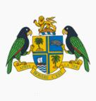

Dominica
 |
 |
Información General
Nombre oficial: Commonwealth de Dominica
Área: 751 km²
Costas: 148 km
División política:10 parroquias
- Saint Andrew
- Saint David
- Saint George
- Saint John
- Saint Joseph
- Saint Luke
- Saint Mark
- Saint Patrick
- Saint Paul
- Saint Peter y 2 consejos municipales
- Roseau
- Portsmouth
Unidad monetaria: Dólar Caribe-Este
1 Dólar Caribe-Este = 100 centavos
Idiomas: Inglés (oficial); dialecto criollo (patois del francés), caribe, hindi (no oficiales)
Fiesta nacional: 3 de noviembre, Día de la Independencia
Gentilicio: de Dominica
Hora oficial: GMT -4 horas (normal/verano)
Miembro de: ONU, Commonwealth, CARICOM, OEA
Curiosidades
El ave nacional de Dominica es el sisserou, o loro imperial. En la isla habitan además otras interesantes especies como el jaquet, o loro de cuello rojo; y el colibrí de cabeza azul.
Perfil
Ecónomico
Perfil Demográfico
Población: 79.000 hab.
Densidad de población: 94,7 hab/km²
Perfil Cultural
Alfabetismo: 94,4%
Religión:
- Católicos: 89,6%
- Protestantes: 7,5%
- Anglicanos: 1,5%
- Otros: 1,4%
Sistema de Gobierno
Constitución vigente: 3 de noviembre de 1978
Sistema ejecutivo: Presidente (Jefe de Estado, electo por la Asamblea), Primer Ministro (nombrado por el presidente, debe tener mayoría en la Asamblea) y su gabinete.
Sistema legislativo: Asamblea (veintiún miembros elegidos cada cinco años y nueve designados). El jefe de la oposición es nombrado por el Presidente entre los miembros electos.
Sistema judicial: La justicia se fundamenta en la ley común inglesa: hay tres cortes y la Corte de Apelaciones de las Indias Occidentales.
Aproximación histórica
Dominica es una isla volcánica situada al norte de Guadalupe y al sur de Martinica. Tiene una abundancia de picos y una espesa selva tropical, el asentamiento de la población es hacia las costas, donde hay hermosas playas. La altura máxima el monte Diablotin sobrepasa los 1400m. Hay numerosos ríos, lagunas y manantiales sulfurosos. El clima es tropical, moderado por las brisas del nordeste, con temperaturas que varían de acuerdo con la altitud.
Debido a su accidentada geografía, Dominica es una de las últimas islas en ser colonizada por los europeos. Su posición hace que se convierta en centro de disputa entre ingleses y franceses en el siglo XVII. Inglaterra se apodera de Dominica en 1783 y los conflictos entre colonos y nativos se vuelven constantes. En 1978, Dominica se convierte en un Estado independiente asociado a la Comunidad Británica (Commonwealth).
Dominica fue prácticamente destruida por dos huracanes en agosto de 1979 y en 1980 fue nuevamente víctima de otro huracán.
«-- ir al comienzo
«-- regresar